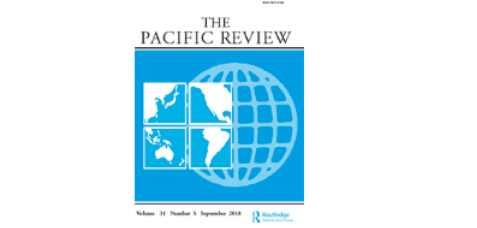

收录于合集

简 介
【作者介绍】 Bjørn Elias Mikalsen Grønning，系挪威奥斯陆国防大学学院亚洲安全研究中心研究员。研究主题为：日本安全与防务政策、导弹防御与海上安全。著有《日本军事转变的优先事项：平衡中国崛起》（2014年）《保护现状：日本对中国崛起的回应》《战略调整与中国崛起：东亚的权力和政治》（2017）。
【文章来源】 The Pacific Review, Volume 31, Issue 4, 2018, pp.533-552.
期刊介绍：《太平洋评论》（The Pacific Review）主要聚焦亚太地区国家的国内政治决策与国际互动，论文内容涉及国内与国际政治、经济变迁与互动、商业及工业政策、军事政策与文化议题。2017年该杂志影响因子为1.809，在85家国际关系期刊中排名第23位，在68个区域研究期刊中排名第6位。

【期刊网址】
https://www.tandfonline.com/toc/rpre20/current
【编译】 彭小朵
【审核】 庞林立
【提纲】
迈向实质性的非美国双边安全：越南和菲律宾
东亚海上地区的权力平衡转移，日本的威胁感上升
美国的支持
日本民族主义
国内宪法、法律改革
限制与约束
结语
核 心 观 点
2013年12月，日本发表了第一份《国家安全战略》，揭示日本外交政策的最新趋势，即推动双边安全关系多元化。本文指出日本与菲律宾和越南的安全合作有六个共同的基本特征：上层建筑的“战略伙伴关系”、战略对话制度化、高层政治互动频率增加、与中国领土争端时的外交支持、以援助为基础的海上力量建设、以及日益庞大的军事合作。文章进一步提出，日本发展这些非美国安全双边关系的根本原因在于东亚权力平衡的转变和中国海洋力量的崛起对日本的战略挑战。此外，这些非美国安全双边关系的发展一直是在美国的支持下进行的，并受到日本民族主义和安全立法改革的欢迎。然而，作者同时认为，日本面临着国内与地缘战略的限制和反制措施。
迈向实质性的非美国双边安全：越南和菲律宾
日本将其安全合作关系扩展到东南亚的雄心可以追溯到1991年促进建立多边区域安全对话的中村提案。21世纪初期，菲律宾和越南分别出现在日本的安全议程中，并且与之展开了大量安全合作，这种 **安全关系表现出以下六个基本特征： （一）战略伙伴关系结构。**2009年与2011年，在分别与越南和菲律宾发表建立战略伙伴关系的声明后，日本与两国的安全关系得以升级。（二） 战略对话制度化 。日本与菲律宾于2010年决定建立副部长级国防和外交战略对话后，还决定启动定期的国防政策对话。越南方面，日本发起日本——越南副部长级战略对话，并且建立定期的部长级和副部长级国防政策对话等。 （三）高层战略互动。 非常规的部长级双边互动、议程上的安全对话频繁发生。 （四）外交支持。 在菲律宾和越南与中国的领土争端中，日本还通过对他们外交支持以证实这两个“战略伙伴关系”。 （五）以援助为基础的海上力量建设。 日本通过官方发展援助（official development assistance，ODA）增强菲律宾和越南海上军事能力。 （六）军事合作。 日本与菲律宾和越南分别展开一系列的军事合作，包括联合军事演习、出售军备、军事情报共享等。
**
**
东亚海上地区的权力平衡转移，日本的威胁感上升
日本是一个海洋国家，也是一个自然资源匮乏的国家。它的国家福祉在很大程度上依赖于对外贸易，而对外贸易于日本而言，是与海洋紧密相连的。对海洋的战略依赖使日本对海洋环境和沿海通信线路稳定性的安全要求十分苛刻。然而，近些年来，中国经济迅速发展，并且将其经济实力转化为军事力量，将东亚海域视作扩大和追求战略利益的首选，大力发展海上力量。此外，中国在南海问题上的立场与做法强化了日本对日益强大的中国挑战既定地区秩序的观念。 总而言之， 日本政府 认为中国 崛起将对国家安全带来巨大挑战。因此，日本试图通过加强日美联盟、与其他国家建立安全伙伴关系的方式保障国家安全。
**
**
** ** 美国的支持****
2011年，美国国务卿希拉里提出“亚洲将决定政治的未来”。这一说法受到美国政界的广泛赞同，并构成了“亚太再平衡”的前提。为此美国致力于与菲律宾和越南建立更加强大的双边安全与国防关系，并开展一系列的海上军事演习、提供安全救助等。作者认为： 日本与菲律宾和越南的安全合作是跟随美国的脚步，并在日美联盟框架的支持下得以实施。 主要表现为两点：一是日本在海上能力建设过程中，首先执行了2012年4月“2+2”日美安全保障协商委员会联合声明中概述的联盟政策优先事项；第二，促进日本与菲律宾和越南共同追求的以海上安全为导向的伙伴关系被纳入2015年发布的修订版《日美防务合作指针》中。一言概之，以日美联盟为基石，日本需要扩大深化与其他国家的双边关系，以此作为日美联盟政策的组成部分。
** 日本民族主义**
日本民族主义精英在日本发展 非美国安全 关系时，发挥了重要的推动作用。 与菲律宾和越南建立安全关系以抵制中国的进一步扩张，均与民族主义思想产生共鸣。此外，日本民族主义者有时会加剧中日紧张局势，从而迫使决策者令安全和国防改革合法化。
** 国内宪法、法律改革**
**
**
日本国 内宪法 、法律 改革 推动日本 与菲律宾和越南发展实质性安全关系的进程， 并显著 扩大 他们 安全合作的法律 活动 范围。 首先，对规范武器出口法律的调整扩大了日本与其他国家在军事与工业领域的合作空间。 例如，《防卫装备转移三原则》有条件地允许日本对外出口武器、国防设备与军事技术。 其次，日本安全立法框架的改革极大地扩展了军事合作的法律范围。 其中最引人瞩目的是，新的法律框架允许日本在特定情况下有条件地使用集体自卫权。总的说来，国内宪法与法律改革使日本可以在任何时候、特定的场合合法地进行集体自卫。由于与菲律宾和越南的“战略伙伴关系”可以由日本决策者自行决定，因此新的安全立法允许日本与这些国家的军事合作进行广泛延伸。
** 限制与约束**
在国内外力量的驱动下，日本对越南和菲律宾安全关系虽进一步发展，但仍旧面临着各种限制与约束。第一，国内政治和官僚程序对日本与越南和菲律宾的安全合作的进一步发展施以限制，且日本公众对军事治国的方法持怀疑态度。第二，受菲律宾与越南的经济、军事实力限制，日本与菲律宾和越南发展双关关系在某种程度上并不会为日本带来实质性的帮助，反而将导致其背负沉重的经济负担。第三，菲律宾和越南在多大程度上愿与日本发展安全关系也是影响因素之一。如果与日关系过于亲近，菲越担心将影响与中国或俄罗斯的关系。最后，迄今为止，美国没有在公开场合宣布支持日本在南海的“航行自由行动”，担心地区事态加剧从而破坏美国在该区域更广泛的利益。
** 结语**
在多重因素的作用下，日本与菲律宾和越南的安全合作得到强化，但是进一步的军事发展受到国内政治、地缘政治和地缘战略的限制。此外，菲律宾和越南也无法为日本带来实质性的安全保障。因此本文作者提出， 日本应该加大已有的军事合作力度，而不是谋求军事联盟数量的迅速增加。
点击左下角“ 阅读原文 ”获取原文pdf版
声明
此文为国政学人微信公众平台外文编译系列文章之一，由国政学人编辑首发，不代表本平台观点。欢迎转发分享，未经授权谢绝转载。如有问题，请联系guozhengxueren@163.com
更多阅读
国政学人 （ID：guozhengxueren)
为方便学人及时阅读高质量文章
别忘把国政学人设置 星标 哦~